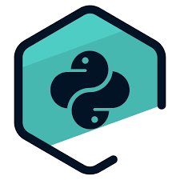
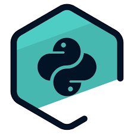

No Brasil, a área de desenvolvimento de jogos também está crescendo, sendo comum a linguagem C# e o motor de jogos Unity, porém, isso varia de empresa para empresa. Já para sistemas de IoT, a chamada internet das coisas, as linguagens de baixo nível são as mais requisitadas, como C e C++.

Para ilustrar o cenário da carreira de programador, Ricardo Pieper conta sua história de aprendizados e conquistas na área de T.I.
| Ano | Histórico |
|---|---|
| 2005: | Por volta dos 13 anos, eu queria aprender como criar jogos, por isso optei por estudar programação. Acho que muita gente da minha idade deve ter passado por esse mesmo caminho. Iniciei um curso técnico aos 14 anos, junto com o Ensino Médio. |
| 2008: | Três anos depois consegui um estágio em uma startup que usava a linguagem de programação C#, no mesmo ano consegui a efetivação e fiquei nessa empresa até o final de 2013, que totalizou quase dois anos de experiência. |
| 2011: | Por volta dessa época, comecei minha faculdade em Sistemas de Informação. Ter feito o curso técnico antes da faculdade facilitou muito as coisas, pois eu já havia aprendido a programar. Dessa forma as cadeiras de programação foram bem tranquilas. |
| 2014: | Depois dessa primeira oportunidade, fui para uma empresa que usava a linguagem Genexus e percebi que era uma linguagem com potencial bastante limitado para a minha carreira, visto que ela resolvia um problema muito específico e deixava a desejar como linguagem de propósito geral. |
| 2017: | Por ter aprendido bastante C#, consegui uma vaga na região metropolitana de Porto Alegre trabalhando com ASP.NET e C#. Fiquei nessa empresa por um tempo, mas chegou a um ponto em que eu estava me sentindo estagnado na carreira. |
| 2020: | Após me aprofundar nesses assuntos, consegui entrar na Ubots como Engenheiro de Software. Além disso, realizei um mestrado na PUCRS, na área de programação paralela distribuída e meu trabalho foi avaliado com distinção. |
| HTML | ⭐️⭐️ |
| CSS | ⭐️⭐️⭐️ |
| JAVASCRIPT | ⭐️⭐️⭐️⭐️⭐️ |
| PYTHON | ⭐️⭐️⭐️⭐️⭐️ |


 
